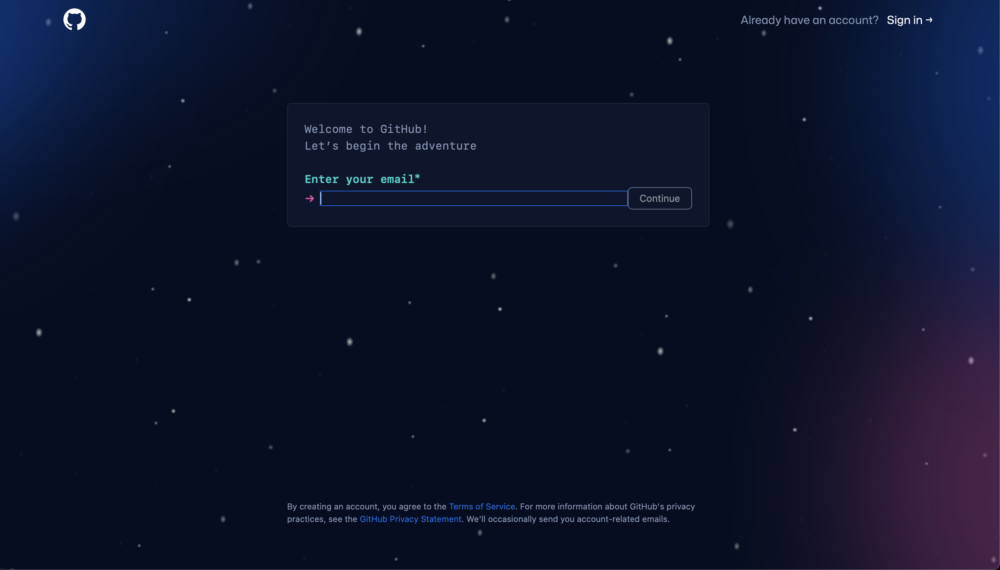

GitHub and Its Importance
GitHub is a web-based platform and service that has transformed the landscape of software development. Its significance extends to developers, businesses, and the open-source community in several ways:
- Version Control and Collaboration: GitHub utilizes the Git system, allowing developers to efficiently track code changes, collaborate with teams, and manage software projects.
- Open Source Hub: GitHub hosts millions of open-source projects, fostering innovation and enabling global contributions to software development.
- Portfolio Building: Individual developers can use GitHub to showcase their coding skills, contribute to projects, and create impressive portfolios for potential employers.
- Collaborative Workflows: GitHub's features like pull requests, issues, and project boards facilitate seamless communication and coordination within development teams.
- CI/CD Integration: GitHub integrates with CI/CD tools, streamlining testing, building, and deployment processes for faster software delivery.
- Community and Learning: GitHub provides a vibrant developer community for knowledge sharing, problem-solving, and participation in discussions that drive technical advancements.
- Career Opportunities: Proficiency in Git and GitHub is a highly valued skill in the tech job market, enhancing career prospects and employability.
GitHub's role in modern software development is indispensable, making it a cornerstone for coding collaboration, open-source contribution, and career development.
So without any further due let's get started 🚀.
Creating a GitHub Account
- Visit GitHub: To get started, open your web browser and go to the GitHub website at GitHub.
- Sign Up: On the GitHub homepage, click the "Sign Up" button to begin the registration process. 
- Choose a Username: You'll need to select a unique username that will be associated with your GitHub account. This will be part of your GitHub profile URL (e.g.,
https://github.com/your-username).
- Provide an Email Address: Enter a valid email address that you have access to. GitHub will use this email for important notifications and account recovery.
- Set a Password: Choose a strong and secure password for your GitHub account. Make sure it includes a mix of uppercase letters, lowercase letters, numbers, and special characters.
- Verify Your Email: After completing the above steps, GitHub will send a verification email to the address you provided. Check your email inbox and click the verification link to confirm your email address.
- Complete Your Profile: Once your email is verified, you can personalize your GitHub profile by adding a profile picture, a short bio, and other optional information. This helps others recognize you on the platform.
- Choose Your Plan: GitHub offers free plans for individual users. You can choose the free plan to get started. Later, you can explore other plans if needed.
- Finish Registration: Review your information, agree to GitHub's Terms of Service, and click the "Create account" button to complete the registration process.
- add code snippets
- use hyperlinks
- embed images
GitHub offers several benefits to students, including access to GitHub Education resources. To take advantage of these benefits with your student ID card:
- Apply for GitHub Student Developer Pack: The GitHub Student Developer Pack provides free access to a wide range of developer tools and services. To apply, visit the GitHub Student Developer Pack page and click the "Get your pack" button. You will need to verify your student status by using your student email address or by uploading a document such as your student ID card.
- Explore GitHub Education: GitHub Education offers resources and tools specifically tailored for students and educators. You can access free GitHub Classroom, GitHub Campus Program, and other educational resources to enhance your learning experience.
- Collaborate on Projects: GitHub is a powerful platform for collaborating on software development projects. You can create repositories to host your projects, collaborate with classmates, and showcase your coding skills to potential employers.
- Build Your Portfolio: GitHub serves as an excellent platform to showcase your coding projects and contributions to open-source projects. This can be invaluable when applying for internships or jobs in the tech industry.
- Access Learning Materials: GitHub hosts a wealth of open-source learning materials, tutorials, and coding exercises. You can explore repositories, join discussions, and learn from the global developer community.
By creating a GitHub account and leveraging the benefits available to students, you can enhance your programming skills, collaborate with others, and build a strong online presence in the software development community.
Congratulations on creating your GitHub account and exploring the opportunities it offers to students!